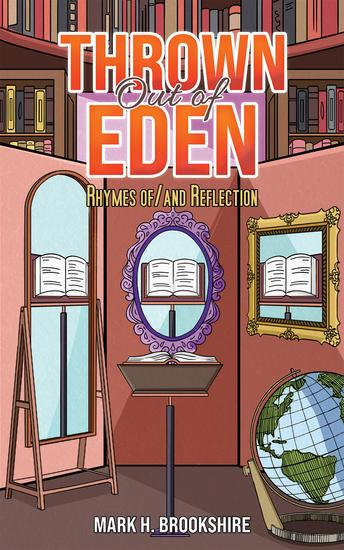

Oil rig deckhandOffshore work
A poet from Dallas, Texas
A life in
reflections.
Thrown Out of Eden · Rhymes of/and Reflection
Oil rigs. Paint brushes. Construction sites. A city still reckoning with its history. Mark H. Brookshire has carried words through all of it — and made a book that holds the mirror up.

01 / A different kind of author pageScroll to enter the room ↓
The premise
/ 001
/ 001
Most writers begin with a blank page. Mark brought the whole world with him.
His cover is full of mirrors, books, and unexpected angles. So is his story. This isn't a standard author biography — it's a room of reflections, each revealing something of the man behind the poems.
The centerpiece / 002
Choose a reflection.
Three mirrors. Three parts of one life. Select a frame to see what it reveals.
REFLECTION ONE · THE WORK
Life, by hand.
Deckhand on an oil rig. Painter. Construction worker. Cable installer. Mark's published biography traces a life made of practical skills and many different kinds of labor.
Click any mirror to change the reflection. ↗
Field notes / 003 · Farmers Branch, Texas
01
02
03
04
Built by hand.
Born in Dallas and raised in Farmers Branch, Mark worked across trades that demand more than a polished résumé. His author biography names four in particular.
No invented accolades.
Just the jobs he actually names.
Just the jobs he actually names.
PainterSurface & color
ConstructionMaking & building
Cable installerSignals & connections
He didn't come from a single discipline.He came from a life
that refused to fit into one.
that refused to fit into one.
From the archive / 004A city.
A city.
A poem.
A reckoning.
In 1988, Mark wrote A Crime Revisited — a poem about Dallas and the long shadow cast by President John F. Kennedy's assassination. The Sixth Floor Museum at Dealey Plaza preserves a typed copy. This history is part of his writing story, not a claim that the museum endorses his book.
See the museum record ↗ARCHIVE / DOCUMENT1989.125.0001
A Crime
Revisited
AUTHOR MARK BROOKSHIRE
DATED 1988
MEDIUM PAPER
HOLDING THE SIXTH FLOOR MUSEUM
SUBJECT DALLAS & NOVEMBER 1963
Record facts are from the museum's public catalog.
Original poem is not reproduced here.CATALOGED
Original poem is not reproduced here.CATALOGED
1963
The city changes
Mark was five when President Kennedy was assassinated in Dallas, according to the museum curator.
1988
The poem is written
Mark writes A Crime Revisited, reflecting on Dallas and how the city was perceived after the assassination.
2005
Presented at the museum
The typed poem is displayed in an installation of personal responses supporting True Colors.
2021
His voice enters the archive
Mark records an oral history with the museum on January 22.
These dates relate to the museum record. A Crime Revisited is presented as a documented separate work, not as a confirmed excerpt from Thrown Out of Eden.
In the author's own words / From the published book description
“When I wield words, I strike with the might of a sledgehammer!”— Mark H. Brookshire, published book description
The actual published cover
One volume / 006Thrown Out
Thrown Out
of Eden.
Rhymes of/and Reflection
Mark's 80-page poetry collection is an invitation to reflect on humanity, imagination, and the times we live in. Its voice is sometimes measured, sometimes forceful — never detached from the world outside the page.
External independent bookseller links; stock and prices vary. Cover reproduction in this concept is pending author/publisher approval for ongoing use.